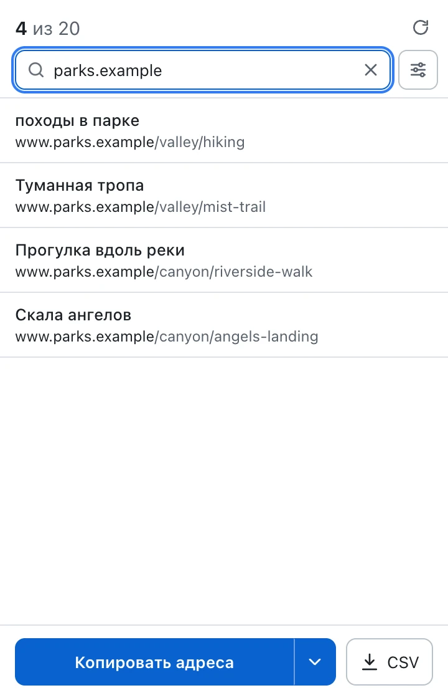

Что умеет расширение

Link Extractor — бесплатное расширение для Chrome: оно показывает список ссылок страницы, которую вы смотрите. Нажмите на значок, и в боковой панели появятся все ссылки в порядке страницы — полный адрес и рядом текст ссылки; повторы объединяются в одну строку со счётчиком. Список можно искать и фильтровать: по домену, типу (страницы, файлы, почта, телефоны), внутренним и внешним ссылкам, nofollow, sponsored и ugc. Ссылки-редиректы Google, Bing и Facebook показывают тот адрес, куда они ведут. Затем скопируйте адреса или скачайте CSV для Excel; длинные списки не обрезаются, так что страница с десятками тысяч ссылок копируется и выгружается целиком. Расширение читает страницу в вашем браузере такой, какой вы её видите, поэтому ссылки, добавленные скриптами, и страницы за вашим логином попадают в список.


Что он умеет
- Все ссылки открытой вкладки в порядке страницы: полные адреса и текст ссылок
- Дубли объединяются в одну строку со счётчиком
- Поиск и фильтры: домен, тип, внутренние и внешние, nofollow, sponsored, ugc
- Копирование адресов или таблицы, которая вставляется в Excel и Google Sheets по колонкам
- Файл CSV, который открывается в Excel без кракозябр
- Настоящие адреса вместо ссылок-редиректов Google, Bing и Facebook; метки utm убираются по желанию
- Ссылки из выделенной части страницы и только результаты поиска Google или Bing
- Бесплатно, без аккаунта; ссылки не покидают ваш браузер
Инструкции
- Как выгрузить все ссылки страницы в CSV, который открывается в Excel
- Как убрать метки UTM и получить настоящие адреса вместо редиректов
- Как собрать все ссылки с большой страницы, где больше 10 000 ссылок
- Как собрать со страницы email, телефоны и ссылки на PDF
- Как скопировать пары «текст ссылки — адрес» в Excel в порядке страницы
Вопросы
Как выгрузить все ссылки страницы в CSV прямо из браузера?
Откройте страницу, нажмите на значок Link Extractor (или сочетание клавиш — по умолчанию Alt+Shift+L, на Mac Ctrl+Shift+L) и нажмите CSV. В файле одна строка на ссылку, в порядке страницы: полный адрес, текст ссылки, домен, тип и другое.
Откроется ли в Excel русский, арабский или китайский текст ссылок?
Да. CSV сохраняется в UTF-8 с BOM (меткой порядка байтов), поэтому Excel правильно показывает любые алфавиты; разделитель зависит от языка Chrome, а если Excel сложил всё в одну колонку, выберите другой в пункте Разделитель в CSV в «Фильтры и настройки». Значение, которое начинается с =, +, - или @, получает впереди апостроф, чтобы Excel оставил его текстом и не выполнял как формулу; в ячейке Excel может показать этот апостроф.
Можно ли выгрузить больше 10 000 ссылок без обрезания?
Да. Копирование и файл CSV включают все ссылки списка, ничего не обрезается. В наших проверках страница с 10 000 ссылок попадает в список примерно за секунду, а список по-прежнему прокручивается и фильтруется без подвисаний. Панель читает до 200 000 ссылок со страницы и столько же из каждого встроенного фрейма, а если ссылок больше, сообщает об этом.
Как скопировать пары «текст ссылки — адрес», чтобы они вставились в Excel по колонкам?
Откройте меню рядом с кнопкой Копировать адреса и выберите Таблица для Excel: адрес, текст, домен и тип попадут в отдельные колонки при вставке в Excel или Google Sheets. Пункт Текст — адрес копирует по одной паре «текст — адрес» на строку, а Адреса — только адреса, по одному на строку.
Собирает ли он ссылки mailto и tel?
Да. Ссылки на почту (mailto:) и телефоны (tel:,
sms:) есть в списке вместе с текстом и копируются в том виде, как записаны на
странице. Чтобы оставить только их, выберите тип Почта или Телефоны в
«Фильтры и настройки».
Работает ли он на одностраничных приложениях и динамических сайтах?
Да. Он читает страницу такой, какая она во вкладке после выполнения скриптов, включая веб-компоненты (shadow DOM). Если новые ссылки подгружаются при прокрутке или после «Показать ещё», прокрутите страницу и нажмите Обновить в панели; когда приложение переходит на другую страницу того же сайта, список обновляется сам.
Выдаёт ли он полные абсолютные адреса вместо относительных путей?
Да. Каждый адрес в списке, в копии и в файле — полный, он разбирается так же, как это
делает браузер, в том числе на страницах с тегом <base>.
Как убрать UTM и другие метки отслеживания из собранных адресов?
Включите Убирать utm и другие метки в «Фильтры и настройки». Он убирает utm_source, fbclid, gclid и другие метки из списка, копии и файла, а ссылки, которые отличались только метками, сливаются в одну.
Объединяет ли он повторяющиеся ссылки?
Да. Один и тот же адрес показан один раз, со счётчиком, сколько раз он встречается на странице. В разделе Дубли можно также объединять ссылки, которые различаются только частью после # или слэшем в конце.
Как оставить только видимые ссылки?
Так и работает по умолчанию: ссылки из закрытых меню и скрытых блоков в список не попадают. Панель показывает, сколько их, а +N скрытых возвращает их в список.
Можно ли отфильтровать внутренние и внешние ссылки или только PDF и картинки?
Да. В «Фильтры и настройки» есть внутренние и внешние ссылки, типы (страницы, файлы,
почта, телефоны), домены и nofollow, sponsored или ugc. Тип Файлы включает PDF,
ZIP, картинки и другие файлы; чтобы оставить один вид, введите .pdf в строке
поиска.
Как получить чистый список адресов из поисковой выдачи Google?
На странице результатов Google или Bing в панели есть кнопка Только результаты: только результаты поиска, по порядку, без рекламы и без собственных ссылок поисковика.
Можно ли собрать ссылки только с части страницы?
Да. Выделите нужную часть, нажмите правой кнопкой мыши и выберите Собрать ссылки из выделенного: в списке будут только ссылки внутри выделения.
Нужна ли регистрация? Отправляет ли он мои ссылки куда-нибудь?
Аккаунт и вход не нужны, расширение бесплатное, без платных функций и рекламы. Список собирается в вашем браузере, и расширение не делает сетевых запросов: ссылки попадают только в буфер обмена или в файл, который вы скачиваете. Наш сайт считает установки, низкие оценки и удаления расширения; в политике конфиденциальности написано, что именно.
Чего он не умеет?
Он работает с открытой вкладкой: не обходит сайт, не переходит по ссылкам и не проверяет,
работают ли они (коды ответа). Chrome не разрешает расширениям читать страницы Chrome Web
Store и chrome://, а для ссылок во встроенных фреймах с других сайтов нужно
ваше разрешение; панель сообщает, какую часть страницы не удалось прочитать.